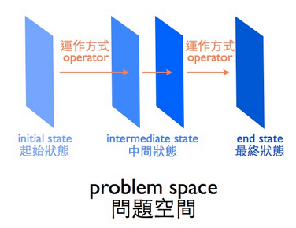

我的話
這些文章都不是由我寫的，但我認為他們都對我和你都很有幫助。如果有一天你因為他們而令到你成功，記住要說給我聽！
披著虎皮的羊，難問題的偽裝

簡介
提姆．布朗 Tim Brown(全球十大創意公司 IDEO 創辦人，《設計思考改變世界》作者) 認為，設計思考就是像設計師一樣思考，解決社會上的種種困難的問題，而這些問題本身通常不是很明確，而且沒有一定的答案，像是「如何把房間整理好？」或是「如何設計一個美好的用餐體驗？」，這些問題沒有一個標準答案，我們通常只能夠試圖的找到目前最好、最適合這個環境和使用者的方式解決。
當我們有一個目標，卻不知道要怎麼到達那個目標，於是就產生了問題，像是每年至少面對一次的：整理房間，就是最好的例子。房間裡的雜物、書本、衣服四處亂堆、所有東西都呈現一片混亂，我們很想要把房間整理好，但又不知道怎麼開始。面臨這種手足無措、萬事起頭難的問題，最好的解決方法似乎是『一一擊破』：先把東西分門別類，先整理衣服、再整理書，把一個複雜的問題，分割成幾個比較簡單的問題。這樣的概念就是運用了問題解決中，把這種困難的問題，分成幾個或幾組定義清楚的問題。
定義清楚的問題
什麼是「定義清楚的問題」呢？在認知心理學中，一個問題具有四大要素，分別是：
- 目標
- 開始的狀態
- 改變的方法
- 障礙
定義清楚的好問題，就是這四大要素都清楚明白。如果拿整理房間的例子來說，目標 很簡單，就是把房間整理好，或是衣服整理好。開始狀態是問題還沒被解決時的狀況，例如我有哪些衣服，這些衣服在哪裡、他們還好嗎，限制我放衣服的空間的衣櫃和房間的大小。而改變的方法 就是能幫助我到達目標的手段們，例如找別人幫忙，或是逼自己今天沒整理完不能睡覺；障礙則是目前不太可能解決的限制，像是我就是很懶的天天收拾。透過了解問題的四大要素，我們可以很清楚的知道現在手上有什麼、要做什麼、要去哪裡、怎麼去，像是上戰場前先了解自己的弱點和配備的武器、敵軍狀況然後要如何進攻。了解問題的四大要素，可以幫助我們在茫茫迷霧中，更有效率的找到出路。由此可知，我們是否能夠成功解決問題，便和我們是否能夠理解和察覺目前的知識和能力，與目標之間的落差有關，也就是勝算有多少。甚至有的時候我們無法解決問題，其實是我們根本不知道有問題，就像不知道快要被偷襲的珍珠港。
一個問題到底難不難，我們都知道其實是很主觀的。有的時候只是我們把它想的太難了，作繭自縛。這個概念可以用一個「爬山問題」來說明。有一個人，早上七點的時候爬上山，然後在山上待一個晚上，隔天早上七點再下山，請問兩天之中有沒有哪個時間點，他是在同一個海拔的？這時候我們可能開始想，上山和下山的速率是不是不一樣？那各是多少？蜿蜒的路徑要怎麼計算？但其實，只要想像有另一個人，在同一時間從山頂下來，問題不就很顯而易見了？一個上山，一個下山，只有一條路，總會碰見的嘛！這不就是兩天之中在同一個海拔的時候嗎！由此我們可以發現，有的時候問題只是「看起來」很難，改變一個看法，很有可能瞬間變簡單。這個「看起來」在心理學中，我們稱作表徵，也就是這件事在我們看來是什麼樣子的，客觀的事情在我們心中是怎麼被解讀、反映的。我們改變了對問題的看法，從一開始比較難的「看起來」，變成後來比較簡單、容易解決的「看起來」，就是我們對於問題的表徵改變了，解讀改變了，這個過程所建構出的空間，我們稱作問題空間。
問題空間分析
Newell和Simon (1972) 提出了問題空間的概念來解釋問題解決的過程。我們透過各種方法，一步步的改變對問題的表徵、問題的狀態，從起始的狀態，到最後解決問題的最終狀態。藉由這樣的方式來了解一個解決問題的過程，我們才有機會知道解決問題的過程是什麼，就像在組裝玩具，只有知道了問題的四要素，就像只擁有了零件，而問題空間的概念，則提供了我們組裝的過程，我們可以透過這樣形象化的概念，讓本來迷茫不得解的問題，逐漸的明朗化，讓我們知道我們要做的就是找出這些中途的各種狀態，然後也找出怎麼從這個狀態，移到下一個狀態，轉變狀態的運作方式。
正所謂「知己知彼，百戰百勝。」，正確的理解問題本身，其實正是我們能否解決問題的關鍵。越清楚所要面對的問題是什麼，清楚的知道四要素是什麼，越可能成功的解決問題。也就是定義清楚的問題，會比定義不清楚的困難的問題容易解決。另外，更別忘了我們的大腦其實一次只能處理一件事情、想一件事情（像我們就不可能一邊想晚餐要吃什麼，一邊想明天要穿什麼），序列式的在處理問題，記憶體被佔滿了就沒有空間運作其他的思考。我們在想辦法、翻找記憶抽屜的時候，也需要處理時間，所以不用勉強自己一步登天（也辦不到），只能有組織有計劃的慢慢來。
Newell & Simon 所提出的概念成功的把解決過程簡化了，就算中間的很多狀態或元素不清楚，或是開始或結尾並非特定，還是可以簡化成一個又一個狀態，不論是發散思考、收斂思考都是可以同時被包含在其中的，都是可能的運作方式，並不為整個空間設限。嘗試在把解釋設計、創意這種看似是無解無跡可循的問題解決，也能像定義清楚的問題一樣，建構其中所存在的結構。把問題解決中重要的因子包含進來，成功靠經驗和試誤累積出來的，並不是憑空降臨。
透過把這兩種方法，我們可以把一個難問題拆解，切割成幾個簡單的好問題，像是跳石頭一樣在問題空間中挺進，一步步改變問題的狀態。把本來很難、很複雜、很不清楚的問題，簡化、具體化，不只感覺起來似乎就沒那麼困難，也讓自己一下子就清楚了要怎麼解決。省得我們白費了功夫，砸下時間去執行，才發現白忙一場，還很緊張。在互動、體驗設計上，面對那些沒有標準答案、追求更好沒有最好的複雜問題時，撥開他的偽裝，建構出這些困難問題的結構，讓我們更扎實完備的了解問題，更方便我們把尋找到的洞見、觀察應用進來，運用在對的位置，讓我們能更精確且更有效率的，完美我們的設計。
流程規劃必備：經驗與預演
簡介

是否曾經在慶生會上，在生日蛋糕上插好蠟燭，卻在最後一刻才發現沒有打火機！或是抓了兩手玻璃瓶裝啤酒要到朋友家開 Party 卻在想喝的時候發現沒有開瓶器！
打火機、開瓶器這兩種生活用品的用途非常非常得小，小得讓我們並不會去注意或是特別記得要攜帶 （不像出國一定會特別記得檢查有沒有帶到護照），但偏偏它們是活動上的靈魂，少了它們，活動現場的大家，尤其主辦人，當下一定會顯得尷尬。這種因為個小東西或小事而讓人窘迫的烏龍狀況時時刻刻都在上演，究竟怎麼樣能減少它的發生呢？
在討論減少烏龍的方法以前，我想先分享我生活中的其中一種流程規劃，例如：吃盒便利商店買的綜合水果。吃水果有什麼好流程規劃的呢？第一次買時，我先吃了味道比較重且多汁的木瓜後，再接著吃芭樂，結果都吃不到芭樂的甘甜了。現在我學會看過全部水果，心裡先辦個甜味排行殊死戰，然後從味道清甜的開始吃起。這個小小的習慣調整，對我來說，除了能嚐到每種水果完整的味道，還多了點自己跟自己遊戲的趣味：看看自己拿捏的甜味排行準不準。
拿捏水果甜味的精準，來自於生活經驗，經驗越豐富越有助於流程規劃的合宜周全：如果我從來沒有吃過木瓜，那我一定沒有辦法正確評估然後排列出先後順序。又以開車上班為例，如果沒有實際在尖峰時段裡塞過車、沒有實際找過車位，那我們一定沒有辦法抓準時間坐到公司的位子上。
經驗與細心成正比
生活中任何的經驗都是一種學習，所以我們常會被前輩或朋友鼓勵多去嘗試一些「新鮮的事」，它可以是個從沒接觸過的事物、可以是同一種任務但換個方法執行、也可以是同一個活動但換個角色去參與；例如慶生活動我們一定都參與過，但當壽星、當同樂的人或當主辦人可是完全不一樣的事。
經驗除了自己去經歷體驗，也可以從書本、網路以及找人聊聊來慢慢累積，尤其「他人的經驗談、前輩的血淚史」常是非常珍貴的參考資訊，這些也常是書本或學校沒教的事。以上山看夜景為例子，夜晚的山上會很冷，實在不是什麼大不了的學問，不會被特別討論；但只要曾經幾次看完夜景後發燒感冒個兩天，就會學到教訓，下一次也就會記得為自己和友人帶禦寒衣物。鏘鏘鏘鏘，外套拿出來那一刻一定會好感度倍增，細心、貼心的稱讚絕對不會少，殊不知這是自己肉體折騰了幾次得到的訓識。
“ 蒐集許多相關的經驗能幫助我們減少差錯，讓我們成為細心的人。 ”
邁向面面俱到
蒐集與整理經驗常被稱作「做功課」，是流程規劃的重要工作之一，能事先找到問題並先準備好應對；除了看夜景準備外套，還有辦室外活動先設計準備雨天備案等都是從經驗衍生出來的事前準備。但往往還有很多瑣碎的小問題，都是事情真正在進行時才會跑出來，而這堆瑣碎的問題也正是讓事情美中不足甚至強迫中斷的元兇。
為了能讓這堆隱性但惱人的瑣碎問題盡早浮出檯面，我們需要在正式流程完成規劃後，來一個「預演 (Rehearse) 」。一樣以辦室外活動為例，進行預演的過程才會發現接近中午時間待在室外好像太熱了、沒有準備足夠且方便取用的礦泉水、上廁所好像有點不方便而且不太好找、沒準備到垃圾桶、沒準備到衛生紙等等小但重要的事，而這些事就是最常在流程規劃中被忘記的部份，除非吃過癟學到教訓謹記在心。
“ 事前的細心，只能避免掉 90% 的差錯；剩下的 10% 都得預演時才會發現它們。 ”
細心的使用性測試
在使用性測試的流程規劃中，有一個跟預演很像的階段叫作「前測 (Pilot)」，進行方式很單純就是將整個流程正式地走過一次，來幫助所有參與使用性測試的團隊人員更瞭解自己的工作內容與重點，就像舞台劇的預演有助於演員更熟悉台詞、燈光師更熟悉換幕的燈亮燈暗等等。但我參與及規劃過使用性測試的經驗讓我學習到：前測不僅僅是讓大家更熟悉流程，還能有效地幫助發現任何規劃不周全的「重要小事」，如下整理我自己最常忘記但重要的 12 個事項（這些項目其實後來我自己在各種活動的準備上也都拿來檢查）提供給大家參考：
- 發現竟然沒有帶電源線或準備足夠的電池電量，包括手機、電腦、相機、錄影機等
- 發現影音記錄工具竟然沒有放記憶卡或記憶體容量不足
- 發現竟然沒有準備筆、觀察單、提供給參與者的喝水紙杯或杯水等
- 發現竟然沒有先準備好信封以及給參與者的參與測試費用
- 發現竟然沒有先將設備的休眠時間設定為永不
- 發現插座竟然離測試進行的桌子很遠，錄影機、電腦都無法插電
- 發現竟然沒有準備延長線或帶來的延長線長度不夠
- 發現網路訊號竟然很弱或是不穩定
- 發現規劃的時間太短，會耽擱下一個測試的開始
- 發現施測前一天或當天吃太刺激的食物會拉肚子影響測試進行
- 發現手機發出鈴聲或震動聲，會干擾使用性測試的進行
- 發現要記得確認場地有事先預約足夠的時間
打火機、開瓶器不貴，萬一真的沒準備到，也許能鄰居借或在幾公尺外的便利商店就買到，但使用性測試需要的設備器材，可都不便宜而且也沒那麼容易取得，所以務必要在正式測試開始以前準備齊全，否則大家就要焦急奔波來湊齊用品。
我相信只要在正式活動或測試以前，有先認真地走過一次流程，就不會在進行期間有太烏龍的狀況發生；而關鍵就在於預演越正式進行就越能減少差錯，簡單來說，就是要搞得像真的一樣才有用。實際應用「所有的經驗」與「正式態度的預演」，在活動或測試中表現出我們的細心、貼心、專業與周到，除了讓參與的人當下感覺溫暖與放心，也能讓他們事後回味無窮、擁有且學習到一個美好的經驗。
用手思考 Thinking by Hand

世界頂尖創意公司 IDEO 的掌門人 Tim Brown 在他所出版的書「設計思考改變世界」中提到：“ 在我十歲的時候，我就瞭解到，製作原型的本事是建立在經年累月的密集研究之上。小時候，我會花上好幾個小時，用樂高和麥卡諾組裝玩具，創造出一個充滿火箭船、恐龍和機器人的世界，各種形狀都有。和所有小孩一樣，我是用手思考，用具體的道具作為想像的跳板。 ”
在傳統的產業或公司裡面，企劃書和提案報告是很重要的一件事情。整個計畫必須要被完整的構思、提案、審核然後按照計畫執行，但是在 Startup，我們最常遇到的一件事情是：「計畫永遠敢不上變化」。
也許有人會覺得，用腦袋思考應該比用手思考快速，做原型既花時間也花錢。
但是 Tim Brown 告訴我們，用手思考的進化速度遠遠快於我們的大腦。也許我們的大腦並不如我們想像中厲害，許多矛盾點在沒有被實體化之前，不容易發現互相衝突的地方。用手思考，並且幫 idea 開始製作原型，一開始得原型也許很粗糙也沒有關係，在得到粗造的原型的過程中，會知道如何將一開始的構想修改的更好。
透過原型檢核我們的思考過程，在 idea 的每一個發展階段，我們都有著不同的原型在記錄著。有時候我們也會往回看看之前的原型，來找找看現在的結果是不是解決了之前的問題。甚至在某些時候，從歷史的原型裡面我們也找出了讓人遺忘但驚艷的重點。在原型製作的過程，也同時讓我們的團隊合作減低了許多障礙，我們看著同樣且實體化的原型進行溝通，確保著我們在相同的方向上進行。
試著把 idea 的想像實體化是一件很有趣的事情，看著他慢慢長大，幫他修剪不必要的枝枒，然後讓 idea 逐漸收斂成我們真正想要的東西，超酷而且超讓人振奮的！